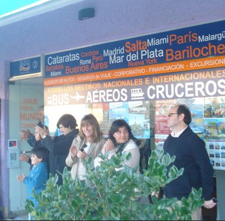
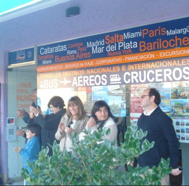

E.G.B
DELINEANTE INDUSTRIAL MECÁNICO - FPII
curso AUTOCAD V.2.0 (1989)
HOBBIES
BASKET, SPORTS
Drawing and Comics
Professional Activity
AUGUSTA II (Estudio de Arquitectura) 1989 | 1992
PANADELL & CAMPELL (Estudio de Diseño) 1990 | 1992
Professional - Big Changes
ABT Ingenieria Medioambiental (ESP) 1992 | 1998
SEGHERS KEPPEL Latino América (ARG) 1999 | 2007
Drawing and design of pipe layout and construction supervision. My work took me to many very interesting places.
- Argentina
- Brasil
- México
- Chile
COUNTRIES WHERE I HAVE WORKED:
Back to the University
ABT Ingenieria Medioambiental (ESP) 1992 | 1998
UNIVERSIDAD DE CONGRESO (ARG) 2001 | 2007
I completed my Marketing degree while continuing to work.
bicycle and Triathlon, continue to be my passion
Marketing & Entrepreneurships
ESTABLECIMIENTO LAHUEN
RESTAURANTE A LA SOMBRA
TELTECA TOURS
COMERCIALIZADORA DE BEBIDAS - MUNDO SUR
Tourism and Food and Beverages
 

Curso Marketing Digital
Certificado Digitaliza y Seguridad GOOGLE
Marketing Digital Certificado GOOGLE
UNIVERSIDAD TECNOLOGICA NACIONAL
CODERHOUSE
IRONHACK
Study Web Development and return to Spain.
Two important decisions that made us start again